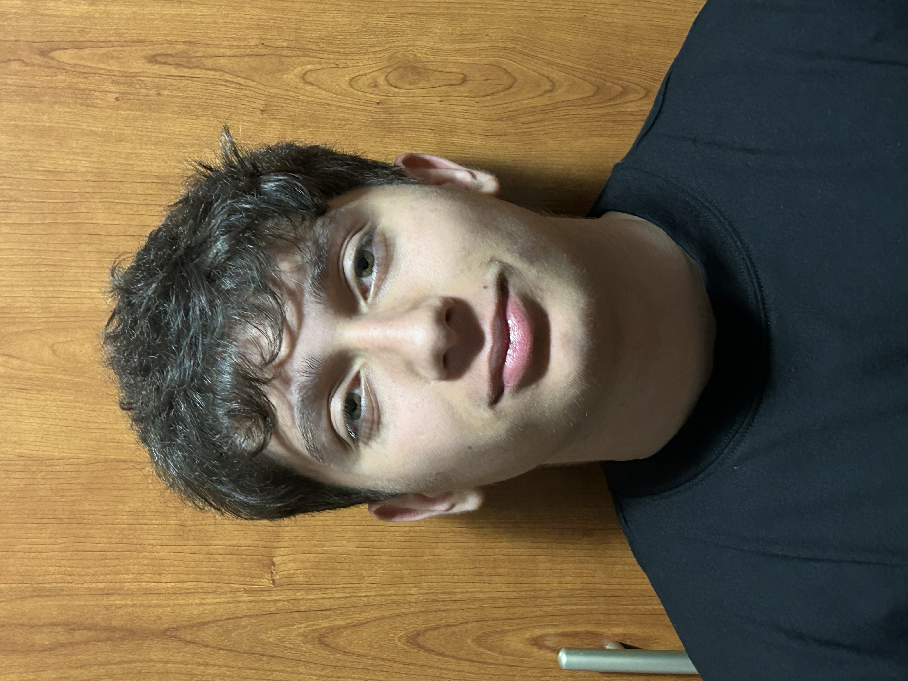
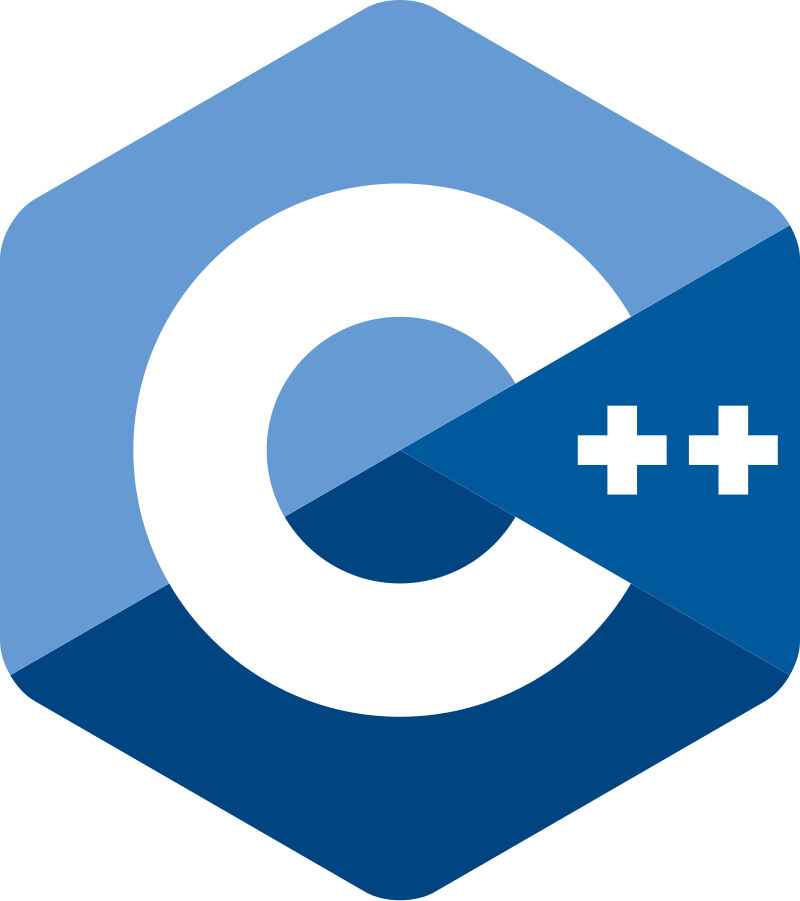
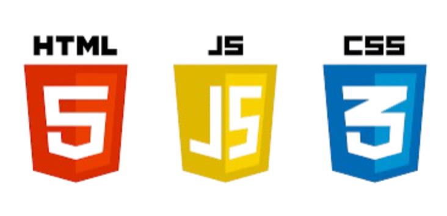

Davide Corrone
Studente di informatica
Studente di informatica
Sono uno studente di informatica, appassionato di tecnologia e programmazione. Mi interesso principalmente alla realizzazione di siti web utilizzando HTML e CSS, dove esprimo la mia creatività e le mie competenze tecniche.
Inoltre, sto approfondendo la programmazione in C++ e in Java, due linguaggi che mi affascinano per la loro potenza e versatilità.(Quest'ultimo lo conosco ancora ad un livello basso)
Le mie ulteriori passioni sono i motori, e lo sport (in particolare il calcio e gli sport da combattimento), e sogno un giorno di fondere le mie competenze informatiche con uno di questi miei interessi.

Attualmente i linguaggi che conosco a livello medio/avanzato sono: C++, HTML, CSS, JavaScript e Assembly x86.

